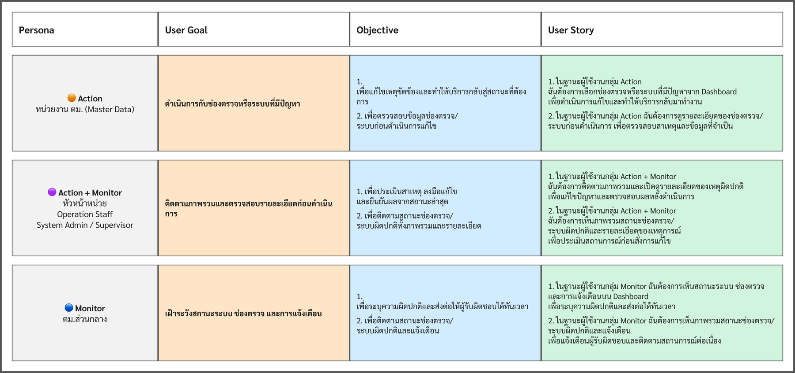
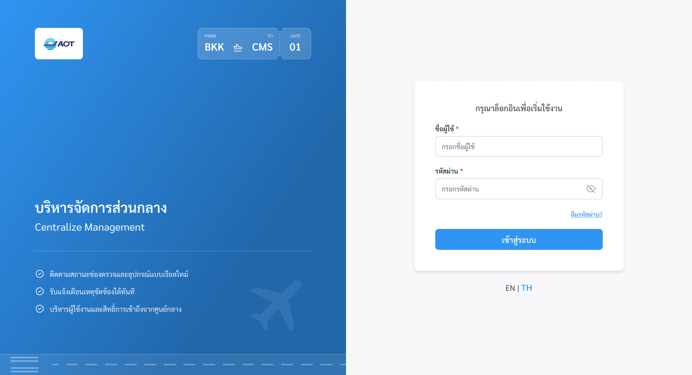

Visibility
Red borders everywhere
Critical faults looked like normal states.
Error prevention
One-click approve & resend
No review before risky actions.
Kept
Upload help modal
A good pattern worth reusing.
A calmer control room for automated passport gates at Suvarnabhumi Airport.

Pick a broken gate, bring service back.
Follow the overview, open anomalies.
Review requesters before granting access.


Tabular digits for IDs and times.
Same red, same meaning, every page.
320px to 1440px+.
Gate, Equipment, Timeline, Stepper.

Only real faults get the error colour.
